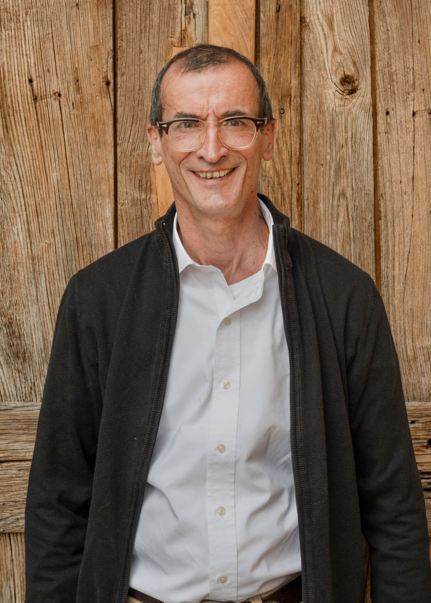

Merlot und mehr aus den steilen Terrassen über Contone, zwischen Monte Ceneri und Lago Maggiore. 46°09′ N · 8°56′ E
Seit über zwanzig Jahren holt Urs Hauser die vergessenen Terrassen über Contone zurück ins Leben, von Hand und Reihe für Reihe. Was dort wächst, wird zu sieben Weinen. Sie heissen nach schönen Abenden, nach einem Stern und nach den Stunden nach Mitternacht.

Il vignaiolo
Urs ist gelernter Elektroingenieur und führte lange einen eigenen Elektrobetrieb. Zum Wein kam er über einen kleinen eigenen Rebberg, ein Hobby, das ihn Jahr für Jahr mehr packte. 2010 machte er es zu seinem Beruf.
Er ist Autodidakt, mit Werner Stucky als Mentor. Er pflanzte neue Reben, pachtete alte Parzellen und holte die ronchi zurück: die verwilderten Terrassen, die einst den Hang über dem Dorf bedeckten.
In den Steillagen wird bis heute fast alles von Hand gemacht. Jedes Jahr will Urs so weit gehen, wie es der Rebberg zulässt, und dabei die Natur respektieren.
«Er hat ein altes Handwerk wiederentdeckt und ihm auf moderne Weise neuen Wert gegeben.»
Tiziano Ponti, Gemeindepräsident von Gambarogno, 2018, bei der Ehrung für zwanzig Jahre Einsatz für die Landschaft von Contone

Le vigne
Die Reben stehen an Nordhängen an der Flanke des Monte Ceneri, unterhalb des Monte Tamaro, auf Granitböden mit kühlen Nächten, und werden von Hand bearbeitet. Rund sechs Hektaren liegen in Contone. Weitere vier verteilen sich auf Gordola, Gerra Piano, Cugnasco, Agarone, Gudo und Cadenazzo. Wenn das Klima wärmer wird, könnten die Nordlagen die richtige Seite des Hügels sein.
I vini
Alle Weine 75 cl · Ticino DOC · Preise inkl. MwSt.
Weiss
Rot

La cantina · 2025
Der neue Keller steht direkt vor dem alten: ein rostroter Kubus, dessen gelochte Haut in der Dämmerung leuchtet wie eine Laterne.
Innen gibt es rohen Beton, Stahltanks und Barriques. Tageslicht fällt durch Hunderte kleiner Öffnungen. Es ist ein stiller, präziser Raum für Weine, die Zeit brauchen.


Fotos: Giacomo Albo · via WDMRA

Besuch
Am besten schmecken die Weine dort, wo sie entstehen. In der neuen Cantina gibt es Degustationen und Direktverkauf. Am besten kurz anrufen oder schreiben, Urs nimmt sich Zeit.

Newsletter
Einmal im Jahr kommt ein Brief, wenn der neue Jahrgang bereit ist, den Keller zu verlassen. Mehr nicht.